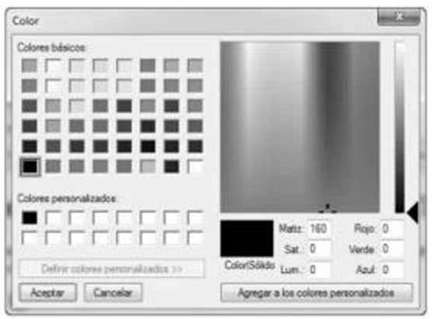

3.2.1 input color

(Disposición de las páginas de nuestro libro en HTML5: agregar un elemento details) Modifique su solución al ejercicio 3.10 para agregar la tabla en la figura 3.5. Use la leyenda de la figura como el elemento summary y aplique formato a la tabla como un elemento table de HTML5 dentro del elemento details.